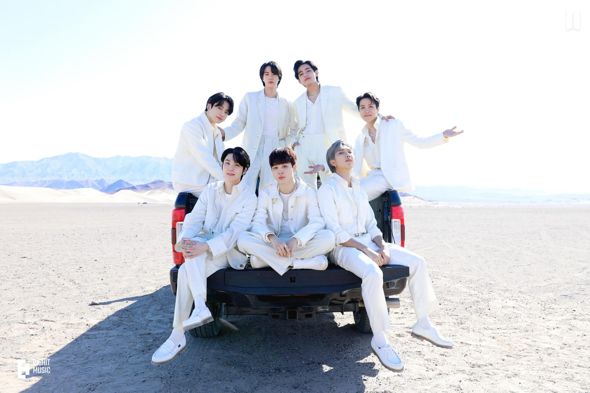

Finally, the wait is over! 2025 is here! BTS is back !
We've waited with love, tears, and strength together. Proves that, we are really strong
How did we survive?
Let’s travel back together and see 💜
Proof Album - BTS's First Anthology Album
"Yet to Come" - A heartfelt song from the "Proof" album. This song reflects on their journey and delivers the message that the best is yet to come.
BTS FESTA Dinner 2022
It was truly a bittersweet moment. BTS shared that they were beginning a new journey as solo artists and would take a break from group activities for a while. They also opened up about their thoughts and feelings over the past years.
J-Hope's Solo Era Begins

"Arson" set fire to a new chapter — Hoseok's fearless artistry shone like never before.
J-Hope at Lollapalooza
J-Hope made history as the first Korean artist to headline Lolla — and he lit up the stage.
BTS Vlogs

From painting to camping, each member gave us a piece of their daily lives. These vlogs felt like a warm hug.
BTS on M Countdown
Their final "Yet to Come" stage on Korean music shows left us in tears and full of pride.
Yet to Come in BUSAN
A concert for the ages — BTS and ARMY came together like never before for the World Expo.
The Astronaut – Jin

Jin gave us his heart in "The Astronaut", co-written with Coldplay — a soft, celestial farewell.
Jin with Coldplay Live

That one live performance with Coldplay? Pure magic. A night written in the stars.
J-Hope at MAMA Awards
A fierce, passionate performance that showed his evolution as a solo artist.
Jungkook at the FIFA World Cup
Golden Maknae stole the global stage with “Dreamers” at the World Cup opening ceremony.
Indigo – RM

A masterpiece of thought and emotion, “Indigo” was RM’s letter to the world and to himself.
Jin’s Military Enlistment

With courage and calm, Jin was the first to enlist. ARMY stood by with respect, love, and quiet tears.

Suchwita – A Refreshing Show by SUGA

With *Suchwita*, SUGA brought deep, honest conversations to our screens. Whether chatting with fellow artists, BTS members, or just reflecting with a drink in hand, Yoongi showed us his thoughtful side in a new way. It was intimate, intelligent, and incredibly healing for ARMYs who missed seeing the members together.

BTS 8 Photofolio – A Dreamlike Gift

The BTS 8 Photofolio project was a celebration of individuality and creativity. Each member explored a unique concept—from Jungkook's mesmerizing vampire to RM’s rugged biker, and Jimin's ethereal elegance. These photofolios helped us connect with each member’s imagination during their solo journeys.


More Beautiful Moments with BTS
On The Street by J-Hope

A heartfelt send-off song before his enlistment, expressing gratitude and connection with ARMY.
J-Hope's Military Enlistment

With strength and grace, J-Hope stepped into his new chapter while ARMY cheered him on.
Face Album by Jimin

Jimin’s introspective solo debut album touched our hearts with vulnerability and beauty.
D-DAY Album by Agust D (SUGA)

A bold and reflective masterpiece closing the Agust D trilogy with raw emotions and truth.
D-DAY Tour

SUGA's global tour brought intimacy, fire, and catharsis—every stage was a story told with soul.
Take Two – OT7 Song
A gentle promise of “Take Two” as BTS assures ARMY that this is just the beginning.
BTS Festa 2023

Celebrating 10 years of magic, memories, and meaning—the Festa made us cry, smile, and feel connected.
Jack In The Box (Hope Edition)

The re-release of J-Hope’s solo debut with new tracks and live versions gave us fresh energy.
SUGA's Military Enlistment
ARMY sent off our genius producer with pride and prayers for his safety and strength.
Layover Album by V

V’s velvety vocals and vintage vibe brought warmth and longing with every track.
Golden Album by Jungkook

Jungkook’s first full-length solo album sparkled with pop power, charisma, and golden vocals.
Golden On Stage

Jungkook’s live showcase highlighted his commanding stage presence and connection with fans.
Beyond The Story – The Memoir

A beautifully told journey of BTS—from debut struggles to global milestones. A gift for ARMY and history alike.
Beyond The Stage – Documentary

An emotional behind-the-scenes look into BTS’s bond, creativity, and what it means to keep going.
Closer Than This by Jimin

A touching farewell letter to ARMY from Jimin—raw, beautiful, and closer than ever.
Wherever u r by V

V’s soulful promise of presence, even from afar. A warm hug in musical form.
Military Enlistment: RM, V, Jimin, Jungkook

The final four quietly enlisted, showing strength, unity, and love for ARMY. We’ll wait together.
Jin’s Monthly Messages

Jin never let us feel distant. Each month, he left heartfelt messages and updates during his military service, reminding ARMY that he’s doing well and thinking of us. These moments felt like warm letters from him, straight to our hearts.
J-Hope’s Messages

Even in service, Hobi stayed our sunshine. Whether through handwritten letters, Weverse updates, or touching videos, he made sure ARMY knew he was smiling and staying strong. His warmth and thoughtfulness truly comforted us all.
2024
Hope on the Street

A heartfelt return from J-Hope blending music and dance, connecting ARMY once again to his creative soul.
Friends by V

V’s soothing voice and heartfelt lyrics brought warmth to ARMY all over again with "Friends."
Love Wins All – V & IU

A beautiful duet capturing vulnerability and strength—V and IU’s collaboration touched hearts globally.
Right Place Wrong Person – RM

RM returned with profound reflections in this deeply personal and poetic album.
Right People Wrong Place – Documentary

Premiered at Busan Film Festival, this documentary was a raw and powerful window into RM’s journey.
Watch the DocumentaryJimin – "MUSE" (2nd Solo Album)

On July 19, 2024, Jimin released his second solo album "MUSE", following the success of FACE. With this album, he shared his journey to find inspiration and identity through love, vulnerability, and artistry.
"MUSE" features seven tracks, including the pre-release single “Smeraldo Garden Marching Band” feat. Loco, and explores a broader musical spectrum with lush vocals, layered emotions, and Jimin’s trademark elegance.
🎧 Listen on SpotifyJin’s Comeback
After months of waiting, Jin returned to ARMY with warmth, grace, and that familiar laughter we missed so much.
Jin’s Hug Event

Jin greeted lucky ARMYs with hugs, smiles, and even tears—it was an emotional reunion that marked a new beginning.
Never Let Go – Jungkook
A gift for FESTA 2024, this emotional track reminded ARMY that the bond never fades.

Jin at the Olympics

Jin represented BTS at the 2024 Paris Olympics, proudly waving the ARMY spirit across the world.
Watch the Moment“Are You Sure” Moment

A funny and iconic fan moment that became a trend across ARMY and BTS!
Run Jin

From military to medals—Run Jin captured his energy and ARMY’s admiration worldwide.
J-Hope Comeback

Hobi returned with fresh inspiration, vibrant energy, and new music that shook the charts once again.
J-Hope at KBO
J-Hope threw the ceremonial first pitch at a KBO game, dazzling the crowd with his energy and charm!
Watch the KBO PitchHappy – Album

An uplifting and nostalgic project for fans, celebrating joy and connection.
Happy on the Stage

A live celebration of the “Happy” album, filled with cheers and love from ARMY.
Watch PerformanceJungkook’s Surprise Military Live
ARMYs were shocked and thrilled when Jungkook appeared live—one of the most precious moments during his service.
Watch the Surprise LiveWinter Ahead – V

A soft, introspective track that wrapped fans in comfort during chilly months.
White Christmas – V

V’s take on the classic carol was nostalgic, magical, and deeply emotional.
Special Comebacks and Moments
LV Bag by J-Hope
J-Hope surprised fans with the song "LV Bag"—a rhythmic and stylish track!
Hobi's 12-Hour Long Live
Hobi stayed live for 12 hours, sharing laughs, stories, and moments ARMY will never forget.
 Watch the Live
Watch the Live
Sweet Dreams MV by J-Hope
"Sweet Dreams" delivered exactly that—ethereal, dreamy vibes paired with J-Hope's signature flow.

Mona Lisa by J-Hope
A timeless track, just like the painting—"Mona Lisa" is J-Hope at his most expressive.

Hope on the Stage
J-Hope brought boundless energy and charisma on stage, turning every moment into a celebration.

Jin's Album "Echo"
Jin returned with his heart-touching solo album "Echo"—a beautiful reflection of his journey.

Run Seokjin Tour
“Run Seokjin” was filled with joy, games, and Jin’s charming presence—just what ARMY needed.

Thank You Message

The End